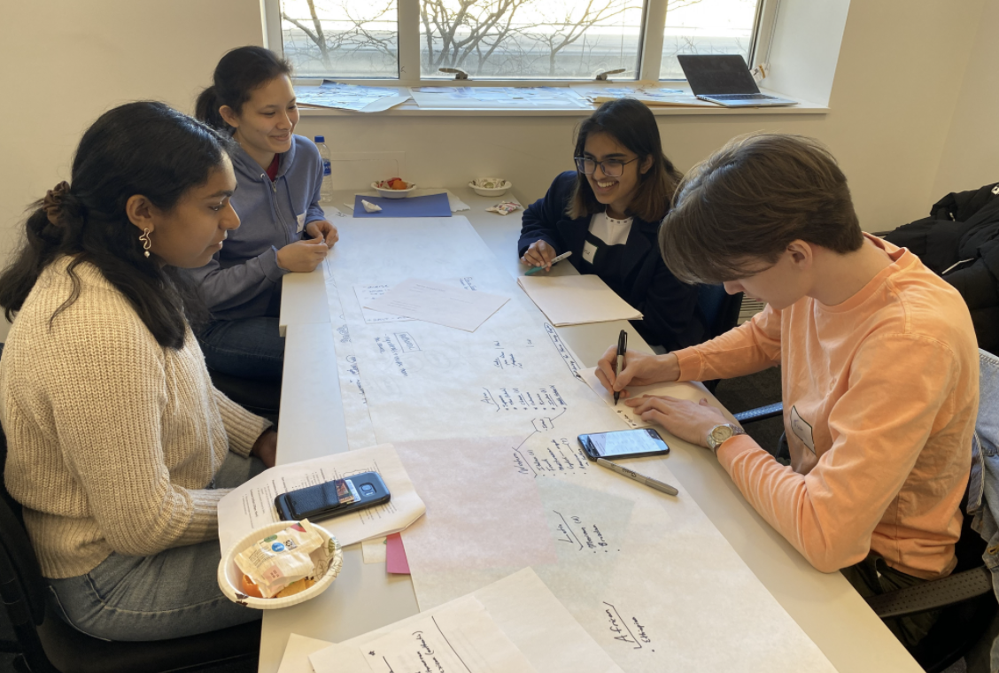
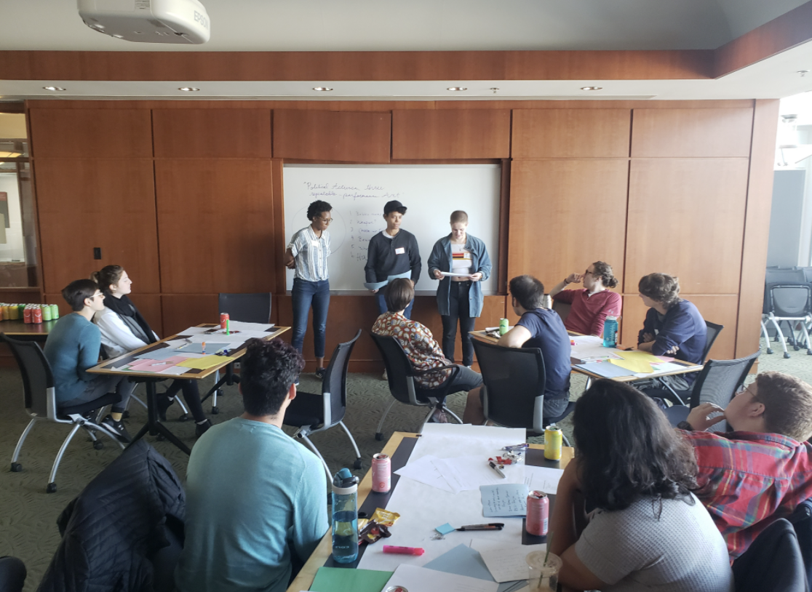

一、活动概述
活动简介：
跨学科工作坊是一个两小时的黑客松式活动。我们邀请二十名左右来自各行各业、背景各异、对自己领域之外的世界充满着好奇心的青年，大家分成4到5人的小组，在一个共同空间里展开讨论，用两个小时的时间里想出一个结合组员专长的项目理念。这个理念可以是一个产品，一部小说，一首诗，一个建筑模型，一个公园，一个装置艺术，或是一个公益组织。我们不限制这个理念的领域、架构大小、成果是否精美，我们在乎的是大家工作创作和学习的过程。
活动宗旨：
- 跳跃学科和领域的界限，让看似截然不同的知识和技能有机结合，创造出新事物
- 颠覆传统“黑客松”对编程和软件的偏重，创造一个模式类似但主题更加广泛的工作坊模式
- 给充满好奇心和创造欲的小伙伴们营造一个舒适好玩、可以自由突破的空间
背景原型：
这个活动的最初模型来自于Katherine Ye（现Carnegie Mellon University计算机科学博士生）于2017年在San Francisco组织的活动: The Antidisciplinarathon。这个活动邀请了35个业界专家，让他们与跟自己领域不同的人形成小组，创造出新的项目理念，挑战自己的学科的边境。
2018年的春天，笔者在校园认识了Katherine。在2019年，笔者组建了一个小学生团队、把这个活动改编成了一个新版本：Not-a-Hackathon。新版本的活动流程跟原型类似，但是受众人群不是学术专家，而是大学本科学生；宗旨不是挑战学科边境，而是给处于学术生涯初期的同学们一个体验不同专业领域的机会。当时，笔者就是个学习计算机和戏剧的本科生，经过几年的跨学科学习，认识了很多不同领域的人，不仅收获知识也交到了很多学术背景各异的朋友。在这个过程中了笔者也体会到了很多难处。比如说，探索未知本身就可能是一件令人畏惧的事情，不同的领域有不同的语言系统，跨学科就好像学习一门新的语言、探索一个新的世界。于是，笔者组织了Not-a-Hackathon这个活动，想通过它创造一个舒适好玩自由的空间，让大家学习“新的语言”。
2021年，笔者想把这个活动带到706在纽约和上海的活动空间。我们的成员将不仅仅是在校学生，而是各种想去自己领域之外冒险的年轻人。不论是对学生还是已经工作的人，跨学科探索都有很大的价值，也有一定难度。这个活动的目标是能够降低其难度，并实现其价值，让大家收获知识，也认识新朋友。
二、活动筹备
空间
- 开放式空间，可以容纳20个人左右。
- 每个小组都配有一个桌子和几个椅子。一共四五个小组，每个小组有四五个组员。没有桌椅的话沙发和地毯也可以。只要有地方让大家写写画画就okay。
- 每个组配有马克笔，铅笔，彩纸，超大张的草稿纸。
- 投影系统，用来上海和纽约客厅的实时转播。
人员
每个活动空间（上海和纽约）需要以下成员。
- 一个主持人，负责知道活动的进程，提供组长指示。
- 主持人助理，负责分发材料，控制投影仪，控制时间，拍照摄像。这样主持人就可以专注于活动内容。
- 四五个小组长，负责指导小组成员的讨论。
- 因为小组成员们不熟或者不了解对方领域，所以讨论可能会经常卡住。这个时候，小组长就应该问些问题打开组员的思路、引导讨论继续发展下去。
- 20名左右成员，在确定参与之后把他们分成四至五人的小组，每个小组的成员都应该来自不同的学术或工作领域。
材料
- 主持人文稿
- 讨论小组长文稿
- 活动流程，事前分发给所有参与成员
- 每个成员的个人简介，事前发给所有参与成员。
- 小组展示模板
三、活动执行
参考流程：
介绍
主持人介绍活动宗旨、流程、和成员。大家可以问问题。
守则
主持人强调活动守则：
拥抱未知--术业有专攻，我们每个人都有专业领域也有知识盲区。“不知道”不仅不是件坏事儿，还是个很好的机会。我们要互相鼓励承认“无知”、勇敢问问题。
- 过程比结果更重要--相比起高质量的产出，我们更看重讨论和摩擦。不需要在一小时内建构出一个完整的结果，一个理念就足够了。
尊重对方--这是一次专业领域的碰撞，更是人与人之间的交汇。请互相尊重、互相倾听。
破冰
各小组玩两个小游戏：
“连线”：每个参与者都是一个点，如果我们发现两个人之间有一些共同之处（例如，如果你们两个喜欢同一个播客、都在某省有亲戚、或都喜欢做饭），我们就会在象征两人的点之间连一条线。找到越多的共同之处，图就有多密集！
“三选一”：从以下问题中自选一个回答：
- 请描述下你的家乡。
- 你现在的手机背景是什么？
- 你小时候的梦想工作是什么？
创作
每个小组自由讨论创作。小组长负责准备纸笔等工具、持续破冰、引导讨论。
大家应该自由运用空间内的各种资源，在自由舒适的环境里进行合作和沟通。
在离结束还有15分钟的时候，小组长应提醒成员开始总结，准备展示。
展示
主持人邀请每个小组上台分享他们创作出来的理念以及创造过程。每个小组应展示以下内容：
各个组员的个人介绍
- 理念的一句话概述
- 理念的深层介绍
- 到达这个理念的讨论过程
- 这次讨论如何结合了每个组员的个人兴趣和专业
- 过程中的惊喜或惊讶之处
- 你们对自己和对方都学到了什么
每个组最多用5分钟展示（如果纽约上海一共八个组的话，就会正好40分钟）。
总结
主持人对活动进行总结，感谢大家的参与。

小组讨论中

小组呈现
注意事项：每个小组的每个成员必须全程参与，不能迟到早退。两个小时本来就没有很长，4-5人的小组也很小，所以任何一名成员的缺席都会带来较大影响。
四、活动后期
作品合集
把成员们的装作成果编成一个合集，比如说一个小册子，分享给各位成员。在成员允许下也可以在706的公众号上与更多人分享。
活动记录
将活动过程和心得写成一篇文章，加上一些图片和小视频，分享给706社群内的小伙伴们。可以参考 The Antidisciplinarathon 和 Not-a-Hackathon 的文章格式。
作者：王心怡，7/14/2021